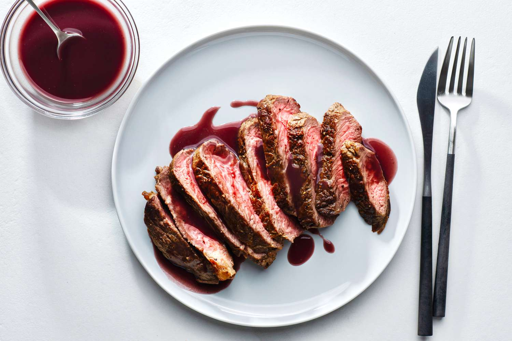

The Best Steak Ever.

Description
Simply the best steak ever.
This recipe isn't for the faint of heart. A reverse sear steak topped with a classic bordelaise sauce, infused with rich and smokey flavors.
Ingredients
- High-Quality, Thick-Cut Steak
- 2 Tbsp Grass-Finished Butter
- 2 Tpsp High-Quality Olive Oil
- 4 Tbsp Finely Chopped Shallots
- 2 Sprigs Fresh Thyme
- 2 Sprigs Fresh Rosemary
- 1 Bay leaf
- 1 1/2 Ounces Demi-Glace
- 2 Tsp Lemon Juice
- 1/2 Cup Diced Beef Marrow
- Salt, To Taste
- 1/2 Tsp Ground Black Pepper
- 2 1/2 Cups Dry Red Wine
- 1 Cup Japanese Whiskey
Bordelaise Instructions
- In a saucepan, combine the wine, shallots, pepper, thyme, and bay leaf. Bring to a boil and reduce to 2/3 cup.
- Whisk in the demi-glace and simmer gently for 15 minutes.
- Strain the sauce through a fine mesh sieve into a clean saucepan. Place pan over low heat, whisk in the lemon juice and beef marrow.
- Season to taste.
Steak Instructions
- Pre-salt steak, 4-6hrs, coarse salt.
- Dry steak, wipe off salt.
- Put steak in oven at low temperature until internal temperature reaches 125F
- Dry steak, heat olive oil until near smoking.
- Quickly sear steak, halfway through add butter, rosemary, thyme and baste.
- Flambe with japanese whiskey.
- Remove steak at 130F